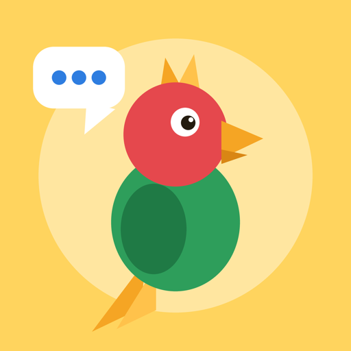

Amans Linguarum
Vokabeltrainer für Englisch, Spanisch, Französisch und Latein
Eigene Vokabeln eintragen, abwechslungsreich abfragen und dranbleiben – ohne Konto, ohne Werbung. Alles bleibt auf deinem Gerät.
Eintragen
- Vier Sprachen: Englisch, Spanisch, Französisch und Latein
- Mehrere Bedeutungen je Wort, etwa „fähig, kompetent, begabt“
- Hinweise wie „Mehrzahl“ direkt zur Vokabel
- Ganze Listen auf einmal einfügen
Üben
- Abwechslung: tippen, auswählen, Lückentext und Wörter-Puzzle
- Kleine Tippfehler zählen als „fast richtig“ – die richtige Schreibweise wird hervorgehoben
- Gezielt wiederholen, was schwerfällt oder mehrfach falsch war
- Selten Geübtes kommt automatisch zuerst
- Vorlesen auf Englisch, Spanisch und Französisch
Dranbleiben
- Level, Tages-Serie mit Joker und zehn Abzeichen
- Tägliche Erinnerung zur Wunschzeit
- Backup zum Sichern und Wiederherstellen